統計モデリング実習 2022 TMDU
(Graduate School of Life Sciences, Tohoku University)
- 導入、直線回帰
- 確率分布、擬似乱数生成
- 尤度、最尤推定
- 一般化線形モデル (GLM)
- 個体差、一般化線形混合モデル (GLMM)
- ベイズの定理、事後分布、MCMC
- StanでGLM
- 階層ベイズモデル (HBM)
https://heavywatal.github.io/slides/tmd2022stats/
ちょっとずつ線形モデルを発展させていく
久保先生の"緑本"こと
「データ解析のための統計モデリング入門」
をベースに回帰分析の概要を紹介。
線形モデル LM (単純な直線あてはめ)
↓ いろんな確率分布を扱いたい
一般化線形モデル GLM
↓ 個体差などの変量効果を扱いたい
一般化線形混合モデル GLMM
↓ もっと自由なモデリングを！
階層ベイズモデル HBM
MCMCで良さげなパラメータを効率よくサンプルする
乱数を使って（モンテカルロ法）、
前の値から次の値に飛ぶ（マルコフ連鎖）
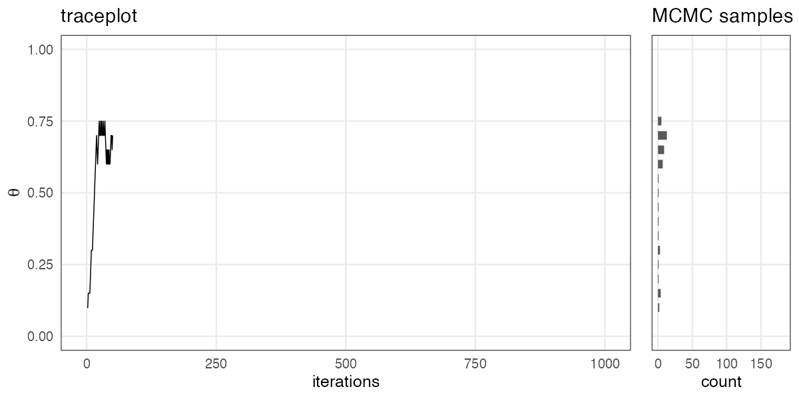
推定結果は分布
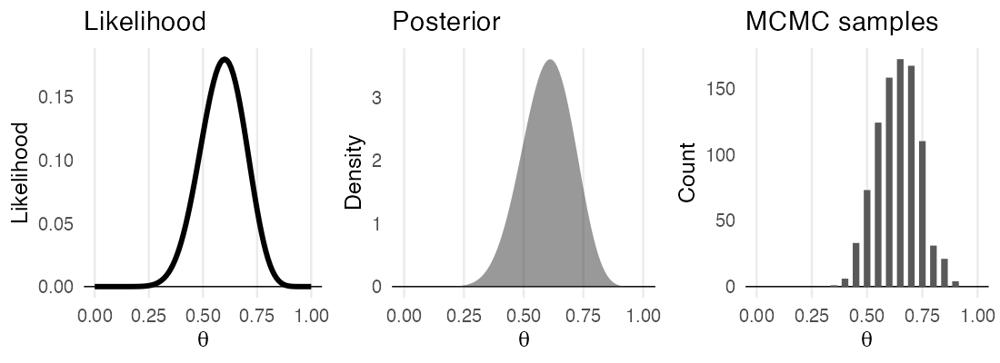
$\;\sim\;$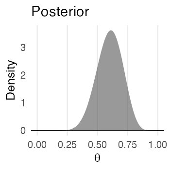
$\;\propto\;$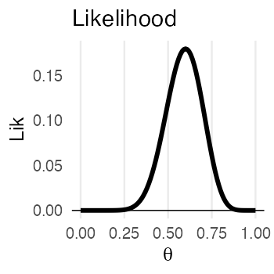
- MCMCサンプルを増やす → 事後分布・尤度関数をより良く近似
- データを増やす → 分布の裾野が狭まり、確信が強まる
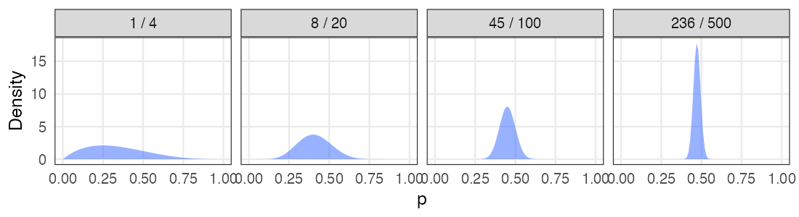
Stan
- Stan言語でモデルを柔軟に記述できる。
- C++で書かれていて高速に動作。
- RやPythonなどから呼び出して使うのが便利。
- RStanとCmdStanRの2つあるけど後者を使う。
library(cmdstanr)
library(bayesplot)
前回、回帰ではないパラメータ推定をやった。
次に、回帰分析をStanでやってみる。
Stanで回帰じゃないパラメータ推定 (おさらい)
別ファイルに書いておく。
e.g., coin.stan:
data {
int<lower=0> N;
array[N] int x;
}
parameters {
real<lower=0,upper=1> p;
}
model {
x ~ binomial(1, p);
}
Rからデータを渡して走らせる:
coin_data = tibble::lst(N = 50L, x = rbinom(N, 1, 0.7))
coin_model = cmdstanr::cmdstan_model("stan/binom.stan")
coin_fit = coin_model$sample(coin_data, seed = 24601L)
直線回帰するStanコードの例
受け渡しするデータや推定するパラメータがちょっと増えただけ。
data {
int<lower=0> N;
vector<lower=0>[N] x;
vector[N] y;
}
parameters {
real intercept;
real slope;
real<lower=0> sigma;
}
model {
y ~ normal(intercept + slope * x, sigma);
}
Rと同様、 slope * x のようなベクトル演算ができる。
直線回帰っぽいデータに当てはめてみる
samplesize = 50L
df_lm = tibble::tibble(
x = rnorm(samplesize, 1.70, 0.05),
bmi = rnorm(samplesize, 22, 1),
y = bmi * (x**2)
)
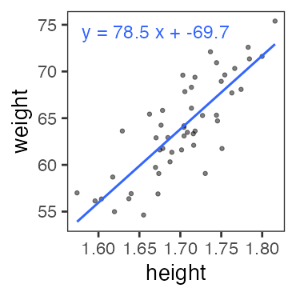
操作は回帰じゃないモデルと同じ
# リストに入れて渡す:
lm_data = as.list(df_lm)
lm_data[["N"]] = samplesize
# モデルを実行速度の速い機械語に翻訳(コンパイル):
lm_model = cmdstanr::cmdstan_model("stan/lm.stan")
# モデルとデータを使ってMCMCサンプリング:
lm_fit = lm_model$sample(lm_data, seed = 19937L, refresh = 0)
print(lm_fit)
variable mean median sd mad q5 q95 rhat ess_bulk ess_tail
lp__ -79.48 -79.13 1.32 1.05 -82.07 -78.07 1.00 1061 1374
intercept -69.32 -69.43 14.36 13.92 -92.96 -45.80 1.00 821 935
slope 78.32 78.36 8.44 8.22 64.44 92.14 1.00 818 950
sigma 3.11 3.07 0.33 0.30 2.62 3.71 1.00 1254 1214
切片と傾きはそれらしき値。 $\hat R$ や $N_{eff}$ も良さそう。 もう少し確認しよう。
CmdStanによる診断
lm_fit$cmdstan_diagnose()
satisfactory とか no problems ばかりであることを確認
Treedepth satisfactory for all transitions.
No divergent transitions found.
E-BFMI satisfactory.
Effective sample size satisfactory.
Split R-hat values satisfactory all parameters.
Processing complete, no problems detected.
draws: 生のMCMCサンプル
lm_draws_array = lm_fit$draws()
dim(lm_draws_array)
[1] 1000 4 4
print(lm_draws_array)
# A draws_array: 1000 iterations, 4 chains, and 4 variables
, , variable = lp__
chain
iteration 1 2 3 4
1 -81 -79 -81 -78
2 -80 -79 -80 -79
3 -79 -79 -80 -79
4 -79 -79 -78 -79
5 -79 -78 -78 -79
, , variable = intercept
chain
iteration 1 2 3 4
1 -72 -87 -59 -73
2 -64 -87 -59 -60
3 -64 -88 -60 -63
4 -66 -87 -66 -65
5 -65 -72 -66 -64
, , variable = slope
chain
iteration 1 2 3 4
1 80 89 73 81
2 76 89 72 73
3 76 89 73 75
4 76 89 76 76
5 76 80 76 75
, , variable = sigma
chain
iteration 1 2 3 4
1 3.5 3.2 3.7 2.8
2 3.2 3.2 3.7 3.0
3 3.2 3.0 3.6 2.9
4 3.0 3.2 2.9 3.1
5 3.2 2.8 2.9 3.4
# ... with 995 more iterations
draws: data.frameのほうが見やすいかも
lm_draws = lm_fit$draws(format = "df") |> print()
# A draws_df: 1000 iterations, 4 chains, and 4 variables
lp__ intercept slope sigma
1 -81 -72 80 3.5
2 -80 -64 76 3.2
3 -79 -64 76 3.2
4 -79 -66 76 3.0
5 -79 -65 76 3.2
6 -78 -65 76 3.2
7 -78 -73 80 2.8
8 -78 -76 82 3.0
9 -79 -72 80 3.3
10 -79 -89 90 2.9
# ... with 3990 more draws
# ... hidden reserved variables {'.chain', '.iteration', '.draw'}
実体はCmdStanが書き出したCSVファイル:
lm_fit$output_files()
[1] "/var/folders/**/***/T/Rtmp******/*-2023****-1-******.csv"
[2] "/var/folders/**/***/T/Rtmp******/*-2023****-2-******.csv"
[3] "/var/folders/**/***/T/Rtmp******/*-2023****-3-******.csv"
[4] "/var/folders/**/***/T/Rtmp******/*-2023****-4-******.csv"
traceplot: サンプル順に draws を並べたもの
どの chain も同じところをうろうろしていればOK。
params = names(lm_model$variables()$parameters)
bayesplot::mcmc_trace(lm_draws, pars = params, facet_args = list(ncol = 1))
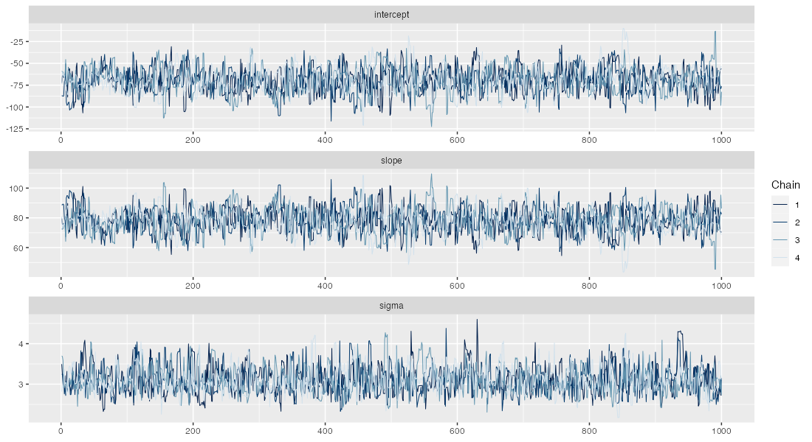
各パラメータの事後分布
bayesplot::mcmc_hist(lm_draws, pars = params, bins = 30)
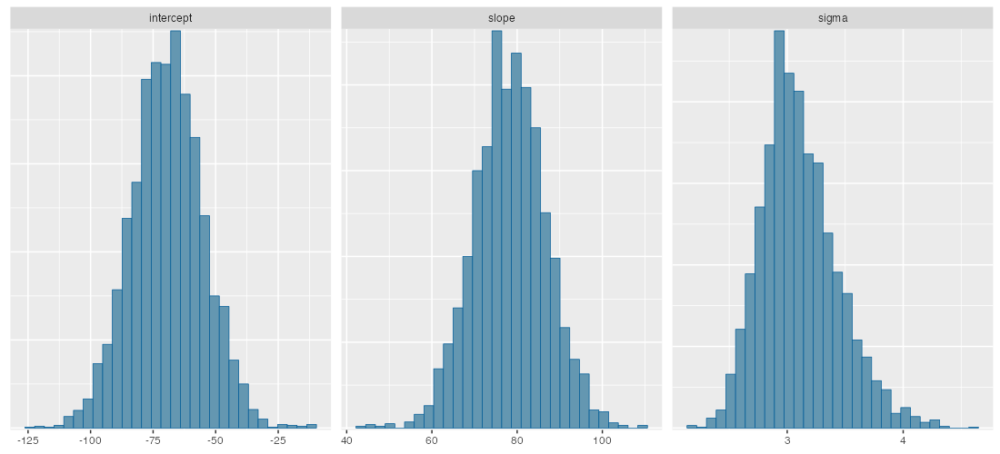
Posterior Predictive Checking (PPC)
サイズ $S$ のパラメータdrawsと $N$ 個の観察値から $S \times N$ 行列の $y_{rep}$ を生成:
mu_rep = lm_draws$intercept + lm_draws$slope %o% df_lm$x
yrep = mu_rep + rnorm(prod(dim(mu_rep)), 0, lm_draws$sigma)
bayesplot::ppc_intervals(y = df_lm[["y"]], yrep = yrep,
x = df_lm[["x"]], prob = 0.5, prob_outer = 0.9)
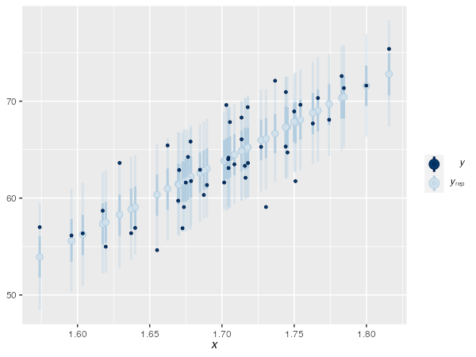
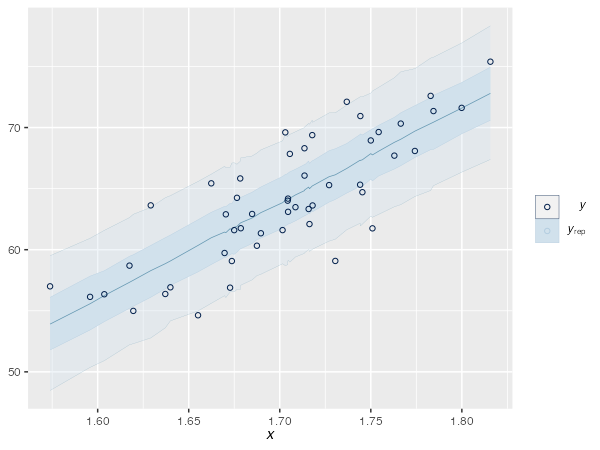
変数とブロックをうまく使って可読性アップ
途中計算に名前をつけることでモデルが読みやすくなる:
model {
vector[N] mu = intercept + slope * x;
y ~ normal(mu, sigma);
}
transformed parameters ブロックに書くとさらに見通しがよくなる:
transformed parameters {
vector[N] mu = intercept + slope * x;
}
model {
y ~ normal(mu, sigma);
}
見た目が変わるだけでなくMCMCサンプルが記録されるようになる。
drawsは嵩むが頭は使わずに済む
lmtr_model = cmdstanr::cmdstan_model("stan/lm-transformed.stan")
lmtr_fit = lmtr_model$sample(lm_data, seed = 19937L, refresh = 0)
lmtr_draws = lmtr_fit$draws(format = "df") |> print()
# A draws_df: 1000 iterations, 4 chains, and 54 variables
lp__ intercept slope sigma mu[1] mu[2] mu[3] mu[4] mu[5] mu[6] mu[7] mu[8] mu[9] mu[10] mu[11] mu[12] mu[13] mu[14] mu[15] mu[16] mu[17] mu[18] mu[19] mu[20] mu[21] mu[22] mu[23] mu[24] mu[25] mu[26] mu[27] mu[28] mu[29] mu[30] mu[31] mu[32] mu[33] mu[34] mu[35] mu[36] mu[37] mu[38] mu[39] mu[40] mu[41] mu[42] mu[43] mu[44] mu[45] mu[46] mu[47] mu[48] mu[49] mu[50]
1 -80.8 -72.5 79.6 3.49 64.3 69.5 56.3 61.2 64.2 57.3 69.6 60.8 57.9 63.3 67.2 61.7 60.5 64.2 62.1 61.9 66.5 60.5 56.5 55.2 60.7 63.2 64.3 65.8 63.3 60.9 63.0 58.1 70.8 63.1 72.1 66.9 64.0 63.3 68.2 66.4 54.6 65.1 68.8 52.9 64.0 66.9 59.9 61.2 59.3 63.6 67.9 66.4 65.3 61.0
2 -80.0 -64.0 75.7 3.24 66.1 71.0 58.4 63.0 65.9 59.3 71.1 62.7 59.9 65.1 68.8 63.5 62.4 65.9 63.9 63.7 68.1 62.4 58.6 57.4 62.6 65.0 66.0 67.5 65.0 62.8 64.8 60.1 72.2 64.9 73.4 68.5 65.7 65.0 69.7 68.0 56.8 66.7 70.3 55.1 65.7 68.5 61.8 63.1 61.3 65.3 69.5 68.0 67.0 62.9
3 -79.3 -64.1 75.6 3.24 65.8 70.7 58.2 62.8 65.7 59.1 70.9 62.5 59.7 64.9 68.6 63.3 62.2 65.7 63.7 63.5 67.9 62.2 58.4 57.2 62.4 64.8 65.8 67.3 64.8 62.6 64.6 59.9 72.0 64.7 73.2 68.3 65.5 64.8 69.5 67.8 56.6 66.5 70.1 54.9 65.5 68.3 61.6 62.9 61.1 65.1 69.2 67.8 66.8 62.7
4 -78.8 -66.3 76.2 2.99 64.6 69.6 57.0 61.6 64.5 57.9 69.7 61.3 58.5 63.7 67.4 62.1 61.0 64.5 62.5 62.3 66.7 61.0 57.1 55.9 61.2 63.6 64.6 66.1 63.6 61.4 63.4 58.7 70.9 63.5 72.1 67.2 64.3 63.6 68.3 66.6 55.3 65.3 68.9 53.7 64.3 67.1 60.4 61.6 59.9 63.9 68.1 66.6 65.6 61.5
5 -79.3 -65.1 76.3 3.21 65.9 70.8 58.2 62.9 65.7 59.1 71.0 62.5 59.7 64.9 68.7 63.4 62.2 65.8 63.7 63.6 68.0 62.3 58.4 57.2 62.4 64.8 65.9 67.3 64.9 62.6 64.6 59.9 72.1 64.7 73.3 68.4 65.6 64.9 69.6 67.9 56.6 66.6 70.2 54.9 65.5 68.3 61.6 62.9 61.1 65.2 69.3 67.9 66.8 62.7
6 -78.2 -65.4 76.0 3.21 65.2 70.2 57.6 62.2 65.1 58.5 70.3 61.9 59.1 64.3 68.0 62.7 61.6 65.1 63.1 62.9 67.3 61.6 57.8 56.5 61.8 64.2 65.2 66.7 64.2 62.0 64.0 59.3 71.5 64.1 72.7 67.7 64.9 64.2 68.9 67.2 56.0 65.9 69.5 54.3 64.9 67.7 61.0 62.2 60.5 64.5 68.7 67.2 66.2 62.1
# ... with 3994 more draws
# ... hidden reserved variables {'.chain', '.iteration', '.draw'}
この右側の mu 行列はさっき苦労して作った mu_rep と同じ。
ひょっとして yrep もStanで作れる？
generated quantities ブロックで乱数生成
(data と parameters のブロックは同じなので省略)
transformed parameters {
vector[N] mu = intercept + slope * x;
}
model {
y ~ normal(mu, sigma);
}
generated quantities {
array[N] real yrep = normal_rng(mu, sigma);
}
normal_rng()
のような乱数生成が使えるのは
generated quantities ブロックだけ。
(yrep を vector[N] 型で作ろうとすると怒られる。)
drawsはさらに嵩むがコードは美しくなった
lmgen_model = cmdstanr::cmdstan_model("stan/lm-generated.stan")
lmgen_fit = lmgen_model$sample(lm_data, seed = 19937L, refresh = 0)
lmgen_draws = lmgen_fit$draws(format = "df") |> print()
# A draws_df: 1000 iterations, 4 chains, and 104 variables
lp__ intercept slope sigma mu[1] mu[2] mu[3] mu[4] mu[5] mu[6] mu[7] mu[8] mu[9] mu[10] mu[11] mu[12] mu[13] mu[14] mu[15] mu[16] mu[17] mu[18] mu[19] mu[20] mu[21] mu[22] mu[23] mu[24] mu[25] mu[26] mu[27] mu[28] mu[29] mu[30] mu[31] mu[32] mu[33] mu[34] mu[35] mu[36] mu[37] mu[38] mu[39] mu[40] mu[41] mu[42] mu[43] mu[44] mu[45] mu[46] mu[47] mu[48] mu[49] mu[50] yrep[1] yrep[2] yrep[3] yrep[4] yrep[5] yrep[6] yrep[7] yrep[8] yrep[9] yrep[10] yrep[11] yrep[12] yrep[13] yrep[14] yrep[15] yrep[16] yrep[17] yrep[18] yrep[19] yrep[20] yrep[21] yrep[22] yrep[23] yrep[24] yrep[25] yrep[26] yrep[27] yrep[28] yrep[29] yrep[30] yrep[31] yrep[32] yrep[33] yrep[34] yrep[35] yrep[36] yrep[37] yrep[38] yrep[39] yrep[40] yrep[41] yrep[42] yrep[43] yrep[44] yrep[45] yrep[46] yrep[47] yrep[48] yrep[49] yrep[50]
1 -80.8 -72.5 79.6 3.49 64.3 69.5 56.3 61.2 64.2 57.3 69.6 60.8 57.9 63.3 67.2 61.7 60.5 64.2 62.1 61.9 66.5 60.5 56.5 55.2 60.7 63.2 64.3 65.8 63.3 60.9 63.0 58.1 70.8 63.1 72.1 66.9 64.0 63.3 68.2 66.4 54.6 65.1 68.8 52.9 64.0 66.9 59.9 61.2 59.3 63.6 67.9 66.4 65.3 61.0 64.0 73.2 58.0 63.3 65.4 56.0 68.2 63.1 56.1 58.7 67.3 56.5 65.9 64.5 59.4 63.1 67.0 59.5 57.1 56.3 57.5 60.5 62.8 66.1 70.5 61.9 65.7 57.5 70.3 59.6 72.9 73.1 59.5 68.9 62.6 63.2 52.1 60.0 64.0 55.2 56.4 66.7 62.8 63.1 58.7 66.0 67.8 68.5 64.3 61.6
2 -81.2 -95.4 94.1 3.23 66.2 72.4 56.8 62.5 66.0 57.9 72.5 62.1 58.6 65.1 69.7 63.1 61.7 66.1 63.6 63.4 68.8 61.8 57.0 55.5 62.0 65.0 66.2 68.0 65.0 62.2 64.7 58.9 74.0 64.8 75.4 69.3 65.8 65.0 70.8 68.7 54.8 67.1 71.5 52.7 65.8 69.3 61.0 62.5 60.3 65.4 70.5 68.7 67.4 62.3 64.6 70.6 52.3 63.0 60.1 58.9 77.3 58.1 55.7 64.1 72.4 67.6 61.4 62.2 62.3 63.6 69.4 60.2 57.7 55.3 63.0 63.6 68.4 68.7 65.0 63.9 70.8 53.5 69.4 60.0 79.2 63.8 64.4 72.0 71.7 70.6 57.5 70.8 70.1 55.5 65.8 67.8 65.6 63.6 61.1 66.4 66.7 71.3 65.8 63.5
3 -80.5 -93.6 92.2 3.24 64.8 70.8 55.5 61.1 64.6 56.6 70.9 60.7 57.3 63.7 68.2 61.7 60.3 64.6 62.2 62.0 67.3 60.4 55.7 54.3 60.6 63.5 64.8 66.5 63.6 60.8 63.3 57.6 72.4 63.4 73.8 67.8 64.4 63.6 69.3 67.2 53.5 65.6 70.0 51.5 64.4 67.8 59.7 61.2 59.0 63.9 68.9 67.2 66.0 61.0 66.6 72.3 48.3 57.8 72.4 51.0 72.3 57.7 57.7 64.9 68.3 60.7 64.0 60.8 63.0 60.6 67.3 60.1 56.4 53.2 58.5 64.1 65.2 67.1 64.3 60.6 63.9 52.9 71.7 64.1 76.4 63.4 68.8 68.0 69.9 69.2 51.9 57.6 74.3 49.6 66.8 65.9 60.3 58.7 52.2 58.8 71.7 63.1 62.8 62.6
4 -79.7 -93.0 92.1 3.23 65.1 71.1 55.8 61.4 64.9 56.9 71.2 61.0 57.7 64.0 68.4 62.0 60.6 64.9 62.5 62.3 67.6 60.7 56.0 54.6 60.9 63.8 65.1 66.8 63.9 61.1 63.6 57.9 72.6 63.7 74.1 68.1 64.7 63.9 69.6 67.5 53.9 65.9 70.3 51.8 64.7 68.0 60.0 61.5 59.3 64.2 69.2 67.5 66.2 61.3 66.3 70.1 56.1 63.2 63.0 53.1 74.9 59.2 51.1 64.3 65.6 57.6 59.0 70.0 66.9 68.2 68.0 60.6 52.6 58.9 63.5 59.3 66.4 66.5 64.5 56.4 64.1 58.1 74.1 61.3 74.4 68.8 64.0 62.3 70.3 64.9 54.4 59.7 73.1 51.0 60.4 66.5 51.7 61.4 62.4 62.7 73.3 68.7 69.8 58.7
5 -81.6 -91.8 92.1 3.23 66.4 72.4 57.2 62.8 66.2 58.2 72.5 62.3 59.0 65.3 69.8 63.4 62.0 66.3 63.8 63.6 68.9 62.0 57.4 55.9 62.2 65.2 66.4 68.1 65.2 62.5 64.9 59.2 74.0 65.0 75.4 69.4 66.0 65.2 70.9 68.8 55.2 67.3 71.6 53.1 66.0 69.4 61.3 62.8 60.6 65.6 70.6 68.8 67.6 62.6 68.9 71.0 60.7 66.4 65.7 67.5 74.2 69.6 55.4 66.9 70.4 66.2 65.5 70.5 64.2 59.2 72.4 64.2 56.9 53.2 54.9 59.0 67.7 67.5 66.9 57.7 64.9 61.1 76.4 67.5 79.1 68.2 68.0 67.9 75.4 69.6 54.4 65.4 73.4 53.2 62.6 72.4 61.7 57.7 60.5 66.3 70.0 72.3 69.2 56.3
6 -80.4 -64.7 76.1 3.50 66.0 70.9 58.3 63.0 65.8 59.2 71.0 62.6 59.8 65.0 68.7 63.5 62.3 65.9 63.8 63.7 68.1 62.4 58.5 57.3 62.5 64.9 66.0 67.4 65.0 62.7 64.7 60.0 72.2 64.8 73.4 68.5 65.6 65.0 69.7 68.0 56.7 66.7 70.3 55.0 65.6 68.4 61.8 63.0 61.2 65.3 69.4 68.0 66.9 62.8 63.6 70.7 51.2 66.5 71.2 56.2 75.3 65.7 61.3 70.1 66.6 59.0 70.9 71.8 63.3 60.3 67.7 63.6 62.7 65.7 60.5 63.9 62.0 65.4 62.8 62.0 67.4 55.2 72.7 63.8 70.8 66.7 65.3 63.7 72.3 69.7 59.8 65.0 77.1 58.9 68.7 70.4 63.3 63.3 59.2 65.7 72.1 63.9 64.7 62.3
# ... with 3994 more draws
# ... hidden reserved variables {'.chain', '.iteration', '.draw'}
yrep = lmgen_fit$draws("yrep", format = "matrix")
を取り出したらあとは bayesplot::ppc_*() に渡すだけ。
観察値とは違うXを使ってPredictionすることも可能
観察値の外側とか、均等間隔とか x_tilde を好きに作って渡せる。
data {
// ...
int<lower=0> N_tilde
vector[N_tilde] x_tilde;
}
// ...
generated quantities {
array[N_tilde] real y_tilde = normal_rng(intercept + slope * x_tilde, sigma);
}
変数の型: vector vs array
vector, row_vector, matrix は実数 real のみで、行列演算できる:
real x;
vector[3] v;
row_vector[3] r;
matrix[3, 3] m;
x * v // vector[3]
r * v // real
v * r // matrix[3, 3]
m * v // vector[3]
m * m // matrix[3, 3]
m[1] // row_vector[3]
array に型の制約は無いが、行列演算はできないので自力forループ:
array[3] int a;
array[3] int b;
for (i in 1:3) {
b[i] = 2 * a[i] + 1
}
パラメータの事前分布を明示的に設定できる
が、省略してもStanがデフォルトでうまくやってくれる。
そのせいで収束が悪いかも、となってから考えても遅くない。
parameters {
real intercept;
real slope;
real<lower=0> sigma;
}
model {
y ~ normal(intercept + slope * x, sigma);
intercept ~ normal(0, 100);
slope ~ normal(0, 100);
sigma ~ student_t(3, 0, 10);
}
設定したくなったら、どう選ぶか？
事前分布の選別
-
とりあえず無情報事前分布 $[-\infty, \infty]$。Stanのデフォルト。
-
収束が悪かったら弱情報事前分布を試す。
事後分布を更新していったとき事前分布っぽさが残らないのが良い。- 取りうる値を逃すような狭すぎる分布はダメ。
- 狭すぎるよりはマシだが、広すぎても良くない。
- 一様分布 $[a, b]$ は一見無情報っぽくて良さそうだが、
事後分布に裾野が残ったり絶壁ができたりしがちなので微妙。
おすすめ: 正規分布 or Student’s t分布
https://github.com/stan-dev/stan/wiki/Prior-Choice-Recommendations
Stanおすすめ弱情報事前分布: Student’s t分布
Student’s $t(\nu=\nu_0, \mu = 0, \sigma = \sigma_0)$
- 自由度 $3 \le \nu_0 \le 7 $ で適当に固定。
- $\nu = 1$ でコーシー分布。裾野が広すぎて良くないらしい。
- $\nu \to \infty$ で正規分布。だいたいこれでいいらしい。
- スケール $\sigma$: 「推定したい値は$[-\sigma_0, \sigma_0]$に収まるだろう」という値。
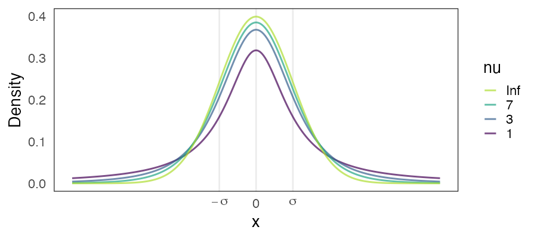
🔰 Stanで一般化線形モデル
GLM回のデータをStanでモデリングしてみよう。
-
直線回帰
-
ポアソン回帰
-
ロジスティック回帰
-
重回帰
-
分散分析
-
共分散分析
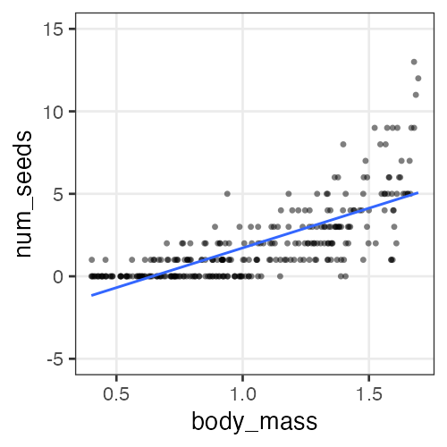
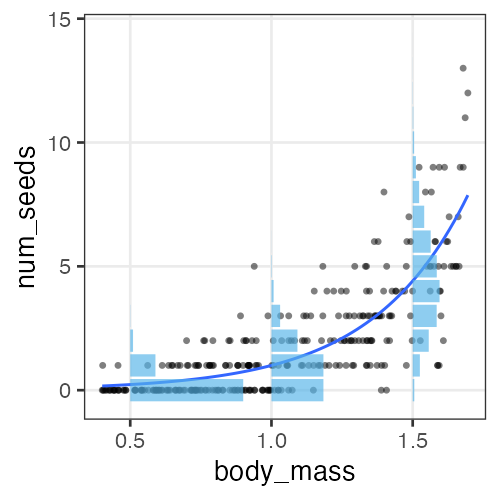
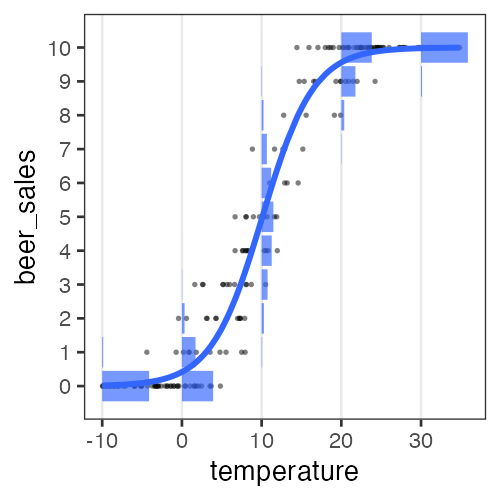
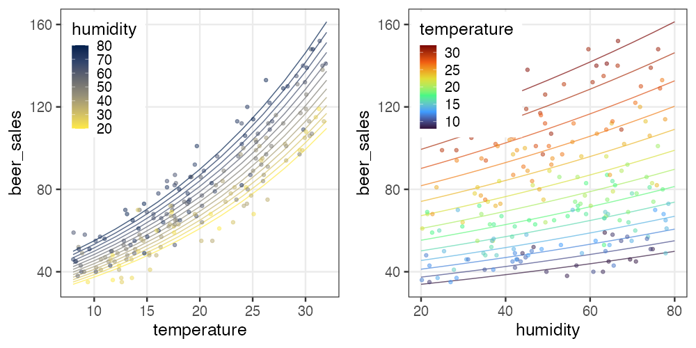
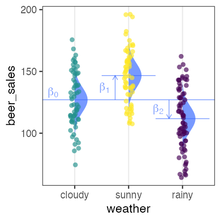
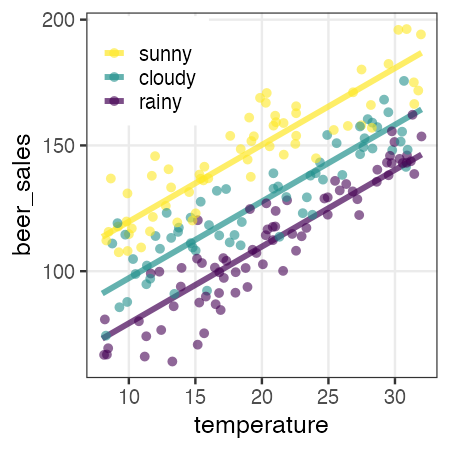
🔰 Stanでpenguinsの回帰分析をしてみよう


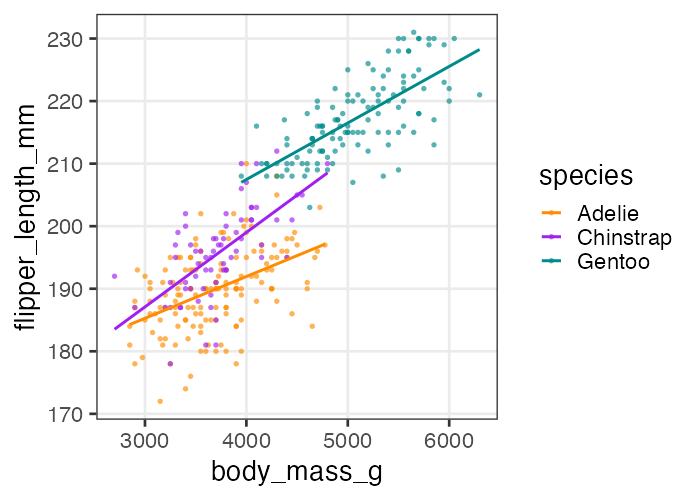
第4回GLM回を参照。
🔰 Stanでpenguinsの回帰分析をしてみよう
Stan does not support NA と怒られるので欠損値を取り除いておく:
penguins_dropna = penguins |> tidyr::drop_na(body_mass_g)
参考文献
- データ解析のための統計モデリング入門 久保拓弥 2012
- StanとRでベイズ統計モデリング 松浦健太郎 2016
- RとStanではじめる ベイズ統計モデリングによるデータ分析入門 馬場真哉 2019
- データ分析のための数理モデル入門 江崎貴裕 2020
- 分析者のためのデータ解釈学入門 江崎貴裕 2020
- 統計学を哲学する 大塚淳 2020